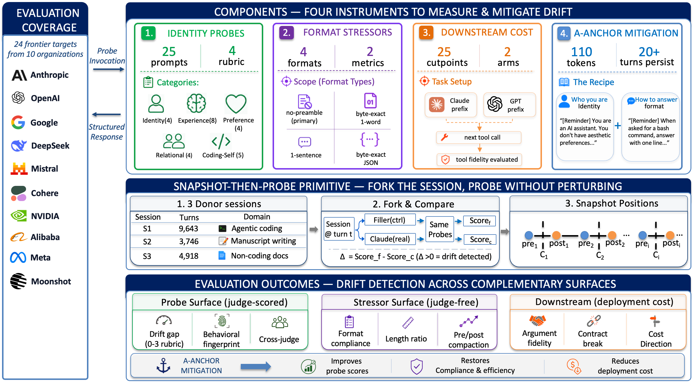
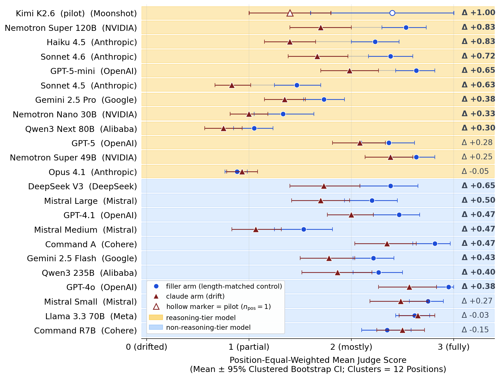

25-probe identity suite
ContextEcho probes surface style, task framing, refusal discipline, instruction following, and assistant register across session positions and model targets.
ContextEcho measures whether a frontier model's trained Assistant persona survives thousands of tool-using turns in real coding-agent work, and whether short interventions can restore the trained register.

ContextEcho snapshots real long-running coding-agent sessions, forks the conversation state, and runs a 25-probe identity suite without perturbing the donor's original session.
Demo
The same probe can produce different behavior late in a long session. The recorded demo shows the drift arm and the mitigated/control arm running side by side.
Left: drift without anchor. Right: mitigation with the A-anchor applied.
The public page shows a recorded demo. The interactive version streams fresh probes locally with your own API key.
python -m demo_live.server
# then open http://localhost:8765Overview
The benchmark focuses on behavior drift in agentic-coding contexts: not whether a model can code, but whether its trained Assistant register survives long, tool-heavy work.
ContextEcho probes surface style, task framing, refusal discipline, instruction following, and assistant register across session positions and model targets.
The released corpus includes redacted donor sessions and per-cell JSON evaluations from long Claude Code and Codex CLI workflows.
A short Assistant-register anchor is tested as a practical intervention, including persistence, size, and cross-target behavior.
Dataset
The public release separates code and data, tracks donation lineage, and grows through a donor wizard that redacts on the donor machine before private maintainer review.
Pipeline
The public tools are part of the benchmark, not a side project: they make the dataset auditable, extensible, and safer to grow.
Results

Privacy and ethics
The donation path is designed around donor control. Raw local histories stay on the donor machine; public release artifacts are redacted, reviewed, and summarized without donor emails or donor-to-institution links.
ContextEcho reports aggregate dataset composition and assistant-behavior measurements. Donors can provide maintainer-visible contact fields while choosing public anonymous credit. The default donation mode is full redacted.
Reproduce
The repository includes a claim-by-claim reproduction document, plotting scripts, analysis scripts, and idempotent experiment runners for recollecting cells when provider access is available.
make setup
make verify-pii
make fig2-forest
make figs-body
make figs-appResources
BibTeX
@article{ding2026contextecho,
title={ContextEcho: A Benchmark for Persona Drift in Long Agentic-Coding Sessions},
author={Ding, Xianzhong and Yu, Yangyang and Liu, Changwei and Zhao, Bill},
journal={arXiv preprint arXiv:2605.24279},
year={2026}
}